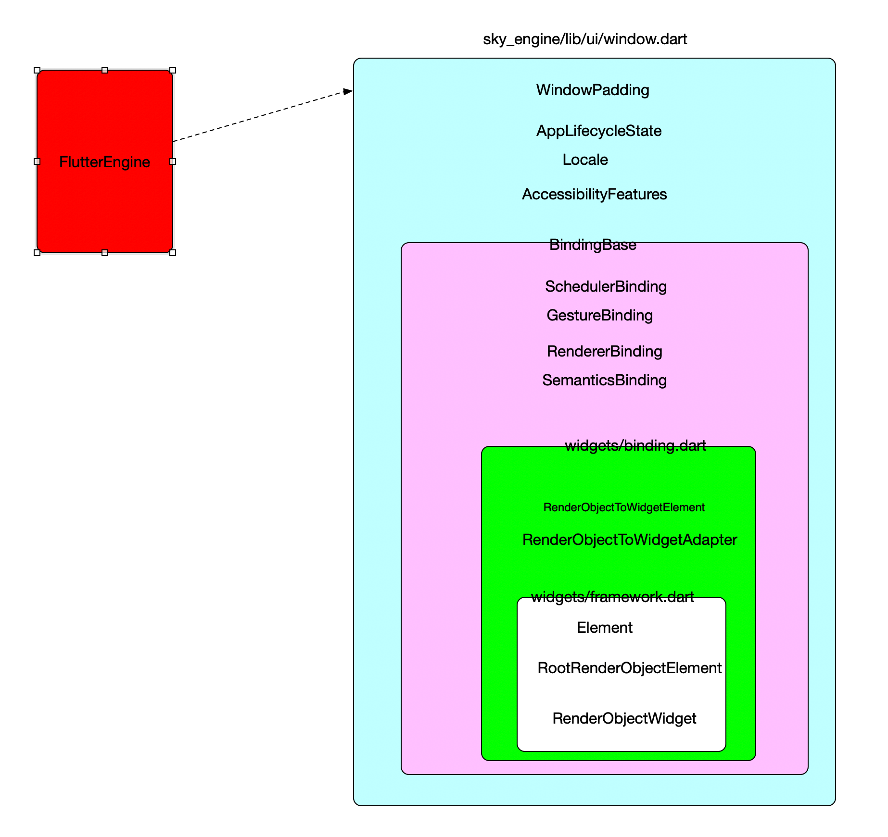
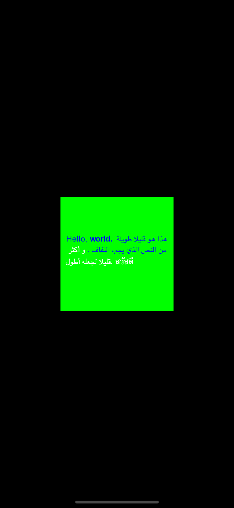

Flutter UI 架构¶
概述¶
在Engine源代码分析中，我们知道，Flutter是通过widow层和Flutter 框架层通信，Widow是上下层通信的枢纽，启动承上启下的作用，那么Widow最小的可执行单元是什么？？
flutter 引擎初始化完成之后，会调用Window中的onBeginFrame 方法来构建一帧，构建完成一帧之后调用ui.window.render(sceneBuilder.build());传递给Flutter的Engine中，第二帧是通过scheduleFrame不断的调动来改变整个Widget的构建过程，不断的改变Widget生成的渲染对象，传递给Flutter引擎，就可以实现相关的代码界面的变动，页面跳转等。
记着下面三个方法，Widget的所用调用过程都是在为构建一帧在做准备
ui.window.onBeginFrame = beginFrame; ui.window.render(sceneBuilder.build()); ui.window.scheduleFrame();
ui.Window类是Flutter引擎和FlutterUI框架的接口，FlutterUI是怎么启动起来的？？？
1.主要完成的是FlutterUI层和FlutterEngine层的绑定操作ui.Window
2.分解系统成的事件
GestureBinding ServicesBinding SchedulerBinding PaintingBinding, SemanticsBinding RendererBinding WidgetsBinding
3.提供一个渲染对象个给ui.window.render(sceneBuilder.build()); 调用Engine中的渲染引擎
4.初始化平台Plugin接口
4.初始化多语言，多区域
window 事件是怎么分解给不同的Binding进行处理的？？¶
1.FlutterEngine通过Widow类和FlutterUI进行通信，包括Widget的绘制和生命周期管理
2.Window类把相关的事件回调和调用方法返回给不同的Bindings类进行解耦，每个部分完成相关的操作
3.FlutterUI层通过runApp包Flutter相关的部分提交给系统框架和系统框架层进行通信
4.通过直接使用window类进行Frame的绘制，就能够对Flutter层进行理解，FlutterUI层其实是Window构造的一个扩展和细化，

核心步骤:¶
Widgets层和window层解耦是通过继承BindingBase的mixin类来继续的，不同的Bindings类继承BindingBase,
/// A concrete binding for applications based on the Widgets framework. /// /// This is the glue that binds the framework to the Flutter engine. class WidgetsFlutterBinding extends BindingBase with GestureBinding, ServicesBinding, SchedulerBinding, PaintingBinding, SemanticsBinding, RendererBinding, WidgetsBinding { /// Returns an instance of the [WidgetsBinding], creating and /// initializing it if necessary. If one is created, it will be a /// [WidgetsFlutterBinding]. If one was previously initialized, then /// it will at least implement [WidgetsBinding]. /// /// You only need to call this method if you need the binding to be /// initialized before calling [runApp]. /// /// In the `flutter_test` framework, [testWidgets] initializes the /// binding instance to a [TestWidgetsFlutterBinding], not a /// [WidgetsFlutterBinding]. static WidgetsBinding ensureInitialized() { if (WidgetsBinding.instance == null) WidgetsFlutterBinding(); return WidgetsBinding.instance; } }
WidgetsFlutterBinding 实现了BindingBase,在BindingBase的构造方法中调用 initInstances方法， runApp调用ensureInitialized方法来全部每一个Binding对象都进行初始化，初始化顺序是从后往前调用initInstances进行初始化，同时也对Window分解的内容进行BindingBase完成过程
1.构造方法中默认调用initInstances 2.构造方法中默认调用initServiceExtensions 3.同时BindingBase, SchedulerBinding, GestureBinding, RendererBinding, SemanticsBinding 也和调用自己的上述两个构造方法 4.完成FlutterUI层和FlutterEngine之间的交互过程
flutterUI框架中提供的实现BindingBase的类¶
每个类的具体功能查看一下对应类的：构造方法中默认调用initInstances,initServiceExtensions
Object (dart.core) BindingBase (binding.dart) 所有Binding类的父类，之后初始化一次 SemanticsBinding (binding.dart) PaintingBinding (binding.dart) ServicesBinding (binding.dart) SchedulerBinding (binding.dart) GestureBinding (binding.dart) RendererBinding (binding.dart) RenderingFlutterBinding (binding.dart) WidgetsBinding (binding.dart) FlutterUI的统一注册入口 WidgetsFlutterBinding (binding.dart) TestWidgetsFlutterBinding (binding.dart)
PaintingBinding¶
绑定画笔库，处理图像缓存，和ServicesBinding 配套使用
mixin PaintingBinding on BindingBase, ServicesBinding { @override void initInstances() { super.initInstances(); _instance = this; _imageCache = createImageCache(); if (shaderWarmUp != null) { shaderWarmUp.execute(); } }
ServicesBinding¶
监听平台消息并将它们定向到[BinaryMessages]。[ServicesBinding]还注册了一个公开的[LicenseEntryCollector]在存储在资产根目录的LICENSE文件中找到的许可证捆绑，并实现ext.flutter.evict服务扩展
mixin ServicesBinding on BindingBase { @override void initInstances() { super.initInstances(); _instance = this; window ..onPlatformMessage = BinaryMessages.handlePlatformMessage; initLicenses(); }
SchedulerBinding¶
用于运行以下内容的调度程序：
- Transient回调，由系统的[Window.onBeginFrame]触发
回调，用于将应用程序的行为同步到系统显示例如，[Ticker]和[AnimationController]的触发器来自这些。
-
Persistent callbacks，由系统的[Window.onDrawFrame]触发回调，用于在瞬态回调后更新系统的显示执行例如，渲染层使用它来驱动它渲染管道。
-
- Post-frame callbacks，仅在持久回调之后运行
从[Window.onDrawFrame]回调返回之前。 *非渲染任务，在帧之间运行。给出了这些 优先级，根据a按优先级顺序执行
mixin SchedulerBinding on BindingBase, ServicesBinding { @override void initInstances() { super.initInstances(); _instance = this; window.onBeginFrame = _handleBeginFrame; window.onDrawFrame = _handleDrawFrame; SystemChannels.lifecycle.setMessageHandler(_handleLifecycleMessage); readInitialLifecycleStateFromNativeWindow(); }
监听平台消息并将它们定向到[BinaryMessages]。[ServicesBinding]还注册了一个公开的[LicenseEntryCollector]在存储在资产根目录的LICENSE文件中找到的许可证捆绑，并实现ext.flutter.evict服务扩展。
mixin ServicesBinding on BindingBase { @override void initInstances() { super.initInstances(); _instance = this; window ..onPlatformMessage = BinaryMessages.handlePlatformMessage; initLicenses(); }
GestureBinding¶
当[GestureBinding]收到[PointerDownEvent]时（来自[Window.onPointerDataPacket]，由。解释[PointerEventConverter]），执行[hitTest]以确定哪个[HitTestTarget]节点受到影响。 （预计其他约束力实现[hitTest]以推迟[HitTestable]对象。例如，渲染层延伸到[RenderView]和渲染对象的其余部分层次结构。）
mixin GestureBinding on BindingBase implements HitTestable, HitTestDispatcher, HitTestTarget { @override void initInstances() { super.initInstances(); _instance = this; window.onPointerDataPacket = _handlePointerDataPacket; }
RendererBinding¶
/// The glue between the render tree and the Flutter engine. mixin RendererBinding on BindingBase, ServicesBinding, SchedulerBinding, GestureBinding, SemanticsBinding, HitTestable { @override void initInstances() { super.initInstances(); _instance = this; _pipelineOwner = PipelineOwner( onNeedVisualUpdate: ensureVisualUpdate, onSemanticsOwnerCreated: _handleSemanticsOwnerCreated, onSemanticsOwnerDisposed: _handleSemanticsOwnerDisposed, ); window ..onMetricsChanged = handleMetricsChanged ..onTextScaleFactorChanged = handleTextScaleFactorChanged ..onPlatformBrightnessChanged = handlePlatformBrightnessChanged ..onSemanticsEnabledChanged = _handleSemanticsEnabledChanged ..onSemanticsAction = _handleSemanticsAction; initRenderView(); _handleSemanticsEnabledChanged(); assert(renderView != null); addPersistentFrameCallback(_handlePersistentFrameCallback); _mouseTracker = _createMouseTracker(); }
WidgetsBinding¶
/// The glue between the widgets layer and the Flutter engine. mixin WidgetsBinding on BindingBase, SchedulerBinding, GestureBinding, RendererBinding, SemanticsBinding { @override void initInstances() { super.initInstances(); _instance = this; buildOwner.onBuildScheduled = _handleBuildScheduled; window.onLocaleChanged = handleLocaleChanged; window.onAccessibilityFeaturesChanged = handleAccessibilityFeaturesChanged; SystemChannels.navigation.setMethodCallHandler(_handleNavigationInvocation); SystemChannels.system.setMessageHandler(_handleSystemMessage); }
源码实现¶
使给定的小部件填充并将其附加到屏幕上。小部件在布局期间被赋予约束，迫使它填充整个屏幕。如果您希望将窗口小部件对齐到屏幕的一侧（例如，顶部），考虑使用[Align]小部件。如果你想中心您的小部件，您也可以使用[中心]小部件再次调用[runApp]将从屏幕上分离上一个根小部件并将给定的小部件附加到其位置。比较新的小部件树针对上一个窗口小部件树，任何差异都应用于底层渲染树，类似于[StatefulWidget]时发生的情况调用[State.setState]后重建。如有必要，使用[WidgetsFlutterBinding]初始化绑定。 也可以看看：[WidgetsBinding.attachRootWidget]，它为。创建根小部件小部件层次结构。 [RenderObjectToWidgetAdapter.attachToRenderTree]，它创建了根元素层次结构的元素。 [WidgetsBinding.handleBeginFrame]，它将窗口小部件管道泵送到确保构建小部件，元素和渲染树。
void runApp(Widget app) { WidgetsFlutterBinding.ensureInitialized() ..attachRootWidget(app) ..scheduleWarmUpFrame(); }
WidgetsBinding集成Bindingbase:
1.构造方法中默认调用initInstances
2.构造方法中默认调用initServiceExtensions
3.同时BindingBase, SchedulerBinding, GestureBinding, RendererBinding, SemanticsBinding 也和调用自己的上述两个构造方法
4.完成FlutterUI层和FlutterEngine之间的交互过程
/// The glue between the widgets layer and the Flutter engine. mixin WidgetsBinding on BindingBase, SchedulerBinding, GestureBinding, RendererBinding, SemanticsBinding { @override void initInstances() { super.initInstances(); _instance = this; buildOwner.onBuildScheduled = _handleBuildScheduled; window.onLocaleChanged = handleLocaleChanged; window.onAccessibilityFeaturesChanged = handleAccessibilityFeaturesChanged; SystemChannels.navigation.setMethodCallHandler(_handleNavigationInvocation); SystemChannels.system.setMessageHandler(_handleSystemMessage); } static WidgetsBinding get instance => _instance; static WidgetsBinding _instance; @override void initServiceExtensions() { super.initServiceExtensions(); registerBoolServiceExtension( name: 'showPerformanceOverlay', getter: () => Future<bool>.value(WidgetsApp.showPerformanceOverlayOverride), setter: (bool value) { if (WidgetsApp.showPerformanceOverlayOverride == value) return Future<void>.value(); WidgetsApp.showPerformanceOverlayOverride = value; return _forceRebuild(); }, ); WidgetInspectorService.instance.initServiceExtensions(registerServiceExtension); return true; }()); }
FlutterUI和FlutterEngine之间的粘合剂BindingBase¶
1.BindingBase初始化
用于提供单例服务的mixins的基类（也称为“Binding”）。在mixin的on子句中使用这个类，继承它并实现[initInstances（）]。 mixin保证只能构建一次应用程序的生命周期（更确切地说，如果构造两次，它将断言
在检查模式下）。用于编写应用程序的最顶层将具有一个具体的类继承自[BindingBase]并使用所有各种[BindingBase]mixins（例如[ServicesBinding]）。例如，Widgets库中Flutter引入了一个名为[WidgetsFlutterBinding]的绑定。相关的library定义了如何创建绑定。可以暗示（例如，[WidgetsFlutterBinding]自动从[runApp]开始，或者应用程序可能需要显式调用构造函数。小部件层和Flutter引擎之间的粘合剂。
初始化绑定时调用，注册服务扩展。想要公开服务扩展的绑定应该重载这个方法使用调用来注册它们 [registerSignalServiceExtension]，[registerBoolServiceExtension]， [registerNumericServiceExtension]，和
[registerServiceExtension]（按复杂程度递增）。此方法的实现必须调用它们的超类实施{@macro flutter.foundation.bindingBase.registerServiceExtension} 也可以看看：
2.和Window类的关联
绑定此绑定的窗口。许多其他绑定被定义为[BindingBase]的扩展，，例如，[ServicesBinding]，[RendererBinding]和[WidgetsBinding]。每个这些绑定定义了与[ui.Window]交互的行为，例如，[ServicesBinding]注册一个[ui.Window.onPlatformMessage]处理程序，和[RendererBinding]注册[ui.Window.onMetricsChanged]，[ui.Window.onTextScaleFactorChanged]，[ui.Window.onSemanticsEnabledChanged]，和[ui.Window.onSemanticsAction]处理程序。这些其他绑定中的每一个都可以静态地单独访问[Window]，但这会妨碍用假冒测试这些行为的能力窗口用于验证目的。因此，[BindingBase]暴露了这一点[Window]供其他绑定使用。 [BindingBase]的子类，如 [TestWidgetsFlutterBinding]，可以覆盖此访问器以返回a不同的[Window]实现，例如[TestWindow]。
abstract class BindingBase { BindingBase() { 1.初始化实例本身 2.注册扩展服务 ....... initInstances(); initServiceExtensions(); ....... } 获取window类 ui.Window get window => ui.window; void initInstances() { } 注册扩展服务 @protected @mustCallSuper void initServiceExtensions() { assert(() { const String platformOverrideExtensionName = 'platformOverride'; registerServiceExtension( name: platformOverrideExtensionName, callback: (Map<String, String> parameters) async { if (parameters.containsKey('value')) { switch (parameters['value']) { case 'android': debugDefaultTargetPlatformOverride = TargetPlatform.android; break; case 'iOS': debugDefaultTargetPlatformOverride = TargetPlatform.iOS; break; case 'fuchsia': debugDefaultTargetPlatformOverride = TargetPlatform.fuchsia; break; case 'default': default: debugDefaultTargetPlatformOverride = null; } _postExtensionStateChangedEvent( platformOverrideExtensionName, defaultTargetPlatform.toString().substring('$TargetPlatform.'.length), ); await reassembleApplication(); } return <String, dynamic>{ 'value': defaultTargetPlatform .toString() .substring('$TargetPlatform.'.length), }; }, ); return true; }()); } 。。。。。。。。。。。。 }
window¶
Flutter用户UI层是怎么和Window管理起来¶
上一节中，已经把系统为我们创建好的Binding类，定义了多个，主要目的就是分别对FlutterEngine和FlutterUI直接的回调和交互做区分处理，达到代码解耦的目的
主机操作系统用户界面的最基本界面。系统中有一个Window实例，您可以这样做从[window]属性获取 FlutterUI用户是怎么访问Window接口的？先使用一个极简的案例来展示一个FlutterUI项目调用FlutterEngine中的接口
Window是如何最简单的一帧绘制在屏幕上的¶
使用新提供的更新应用程序在GPU上的渲染[Scene]必须在范围内调用此函数[onBeginFrame]或[onDrawFrame]回调被调用。如果这个功能在单个[onBeginFrame] / [onDrawFrame]中第二次被调用回调序列或调用那些回调范围之外的调用将被忽略。要记录图形操作，首先要创建一个[PictureRecorder]构造一个[Canvas]，将[PictureRecorder]传递给它的构造函数。发出所有图形操作后，调用[PictureRecorder.endRecording]函数在[PictureRecorder]上获取表示已发布图形操作的最终[Picture]。接下来，创建一个[SceneBuilder]，然后使用添加[Picture][SceneBuilder.addPicture]。使用[SceneBuilder.build]方法即可然后获取[Scene]对象，您可以通过此对象显示该对象[渲染]功能。也可以看看：[SchedulerBinding]，用于管理的Flutter框架类帧的调度。[RendererBinding]，Flutter框架类，用于管理布局和画。

核心实现:
color = const ui.Color(0xFF00FF00); 提供一个Frame数据给Window ui.window.onBeginFrame = beginFrame; 处理点击事件 ui.window.onPointerDataPacket = handlePointerDataPacket; 调用scheduleFrame方法调用native方法访问Flutterengine ui.window.scheduleFrame();
需要汇总的对象添加到window.render中 final ui.SceneBuilder sceneBuilder = ui.SceneBuilder() // TODO(abarth): We should be able to add a picture without pushing a // container layer first. ..pushClipRect(physicalBounds) ..addPicture(ui.Offset.zero, picture) ..pop();
ui.window.render(sceneBuilder.build());
import 'dart:ui' as ui; void beginFrame(Duration timeStamp) { final double devicePixelRatio = ui.window.devicePixelRatio; final ui.Size logicalSize = ui.window.physicalSize / devicePixelRatio; final ui.ParagraphBuilder paragraphBuilder = ui.ParagraphBuilder( ui.ParagraphStyle(textDirection: ui.TextDirection.ltr), ) ..addText('Hello, world.'); final ui.Paragraph paragraph = paragraphBuilder.build() ..layout(ui.ParagraphConstraints(width: logicalSize.width)); final ui.Rect physicalBounds = ui.Offset.zero & (logicalSize * devicePixelRatio); final ui.PictureRecorder recorder = ui.PictureRecorder(); final ui.Canvas canvas = ui.Canvas(recorder, physicalBounds); canvas.scale(devicePixelRatio, devicePixelRatio); canvas.drawParagraph(paragraph, ui.Offset( (logicalSize.width - paragraph.maxIntrinsicWidth) / 2.0, (logicalSize.height - paragraph.height) / 2.0, )); final ui.Picture picture = recorder.endRecording(); final ui.SceneBuilder sceneBuilder = ui.SceneBuilder() ..pushClipRect(physicalBounds) ..addPicture(ui.Offset.zero, picture) ..pop(); ui.window.render(sceneBuilder.build()); } void main() { ui.window.onBeginFrame = beginFrame; ui.window.scheduleFrame(); }
总结¶
通过上面的分析，已经对Window相关的接口继续解耦到不同的binding对象，所有的初始化操作都是在initInstances()方法中进行初始化的
1.调用runApp开始启动一个AppWidget层的入口
2.调用WidgetsFlutterBinding的ensureInitialized方法来对BindingBase的所有子类进行初始化
3.mixin类的初始化是从继承顺序从后往前进行初始化
通过上面的分析和demo的演示，我们可以很方便的了解Widow事件的拆分，不同BindingBase的初始化、以及Window的渲染对象回调到Flutterengin层提供渲染对象，后续的文章将介绍，FlutterWidget层是如何返回Flutter渲染对象的